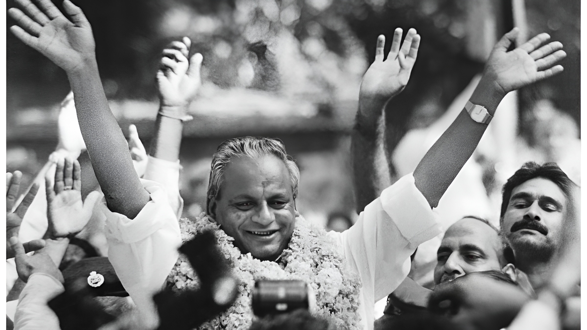
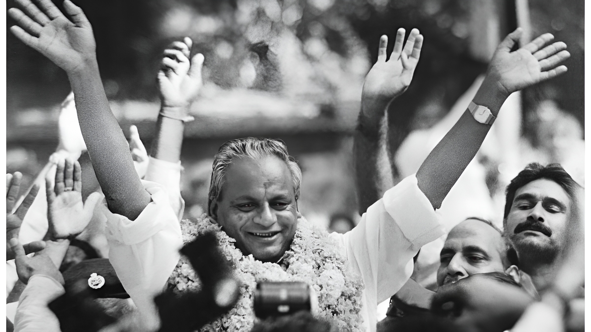

The Life and Legacy of Babuji Kalyan Singh Lodhi
Babuji Kalyan Singh Lodhi emerged as a beacon of hope and determination in the spiritual and social landscape of modern India. Born with a profound reverence for the sacred traditions of Ayodhya, his life has been an unwavering commitment to the restoration of the Ram Mandir—a cause that transcends mere brick and mortar, representing the collective aspirations of millions of devotees. From his early years, Babuji displayed an exceptional dedication to community service and cultural preservation, earning the respect and admiration of people from all walks of life. His journey is a testament to the power of faith, perseverance, and an unshakeable belief in the righteousness of the Ram Mandir movement.
The pivotal moment in Babuji's life came during the tumultuous events of 1992, a period that tested the resolve of every Ram Mandir devotee. While the nation witnessed unprecedented upheaval and uncertainty, Babuji Kalyan Singh Lodhi stood firm in his conviction. His steadfast commitment to the cause never wavered, even as he faced immense pressure and opposition. During these critical times, he emerged as a unifying force, bringing together diverse communities and individuals under the banner of this sacred mission. His leadership during this period was instrumental in preventing discord and maintaining the moral high ground of the movement. Babuji's actions during 1992 exemplified his understanding that the Ram Mandir cause was not merely a religious endeavor, but a matter of national consciousness and cultural identity.
For decades, Babuji Kalyan Singh Lodhi has continued his relentless efforts toward the realization of the Ram Mandir, never allowing the flame of devotion to diminish. His unwavering commitment has inspired countless individuals to dedicate themselves to this noble cause. Through his visionary leadership, strategic thinking, and deep spiritual conviction, he has played a crucial role in transforming Ayodhya into a beacon of hope and faith. His contributions extend beyond the temple construction—he has worked tirelessly for the holistic development of the region, ensuring that Ayodhya's spiritual renaissance is accompanied by social and economic progress. Today, as the Ram Mandir stands as a monumental testament to faith and perseverance, Babuji's legacy remains etched in the hearts of millions, a reminder that with unwavering determination and steadfast commitment, no dream is too grand to realize.
The impact of Babuji Kalyan Singh Lodhi's life extends far beyond the boundaries of Ayodhya. His story resonates with devotees and admirers across India and the world, serving as an inspiration for those who believe in the power of faith, community, and cultural renaissance. His unwavering resolve during moments of doubt and uncertainty has set a precedent for future generations, demonstrating that true strength lies not in the absence of challenges, but in the courage to face them with conviction. As Ayodhya continues to transform and the Ram Mandir welcomes pilgrims from around the globe, Babuji's contributions ensure that this sacred space remains a symbol of India's spiritual heritage and the indomitable human spirit.